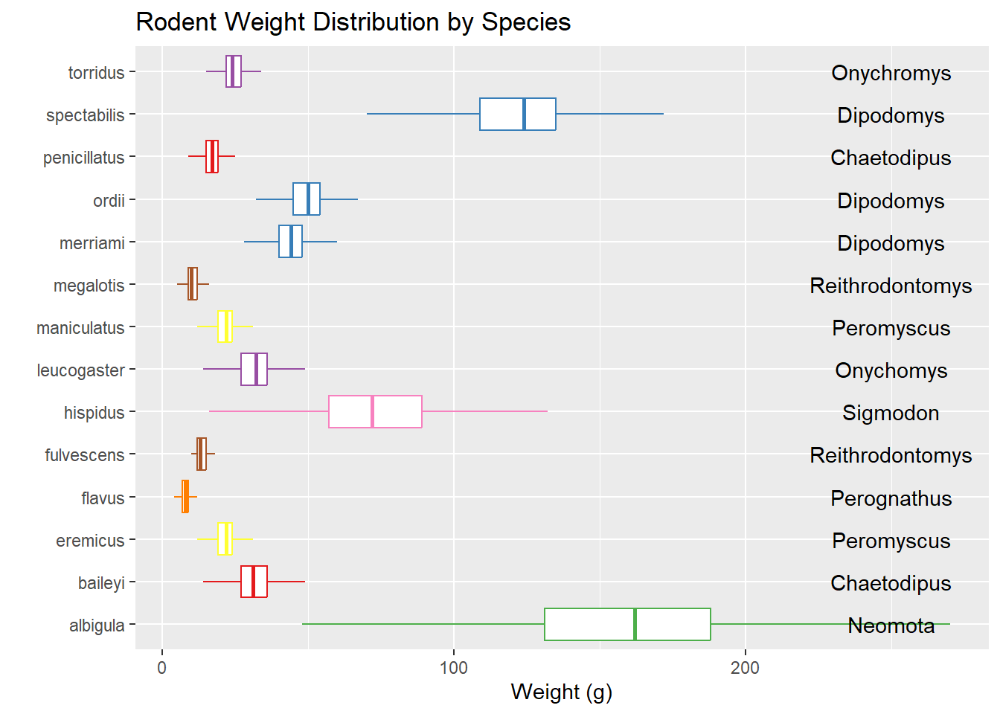
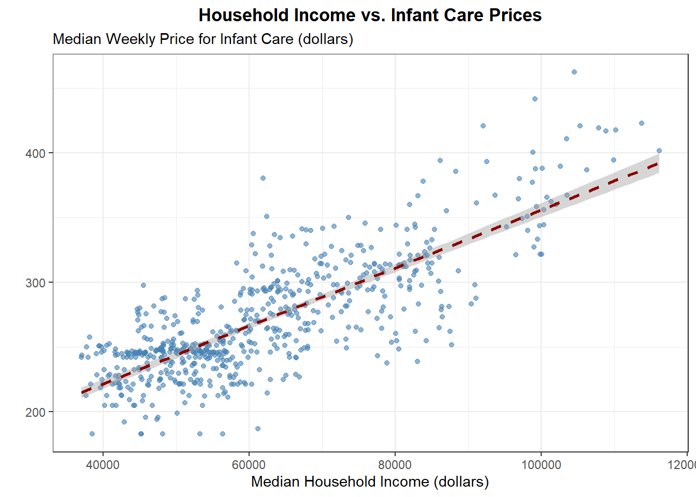
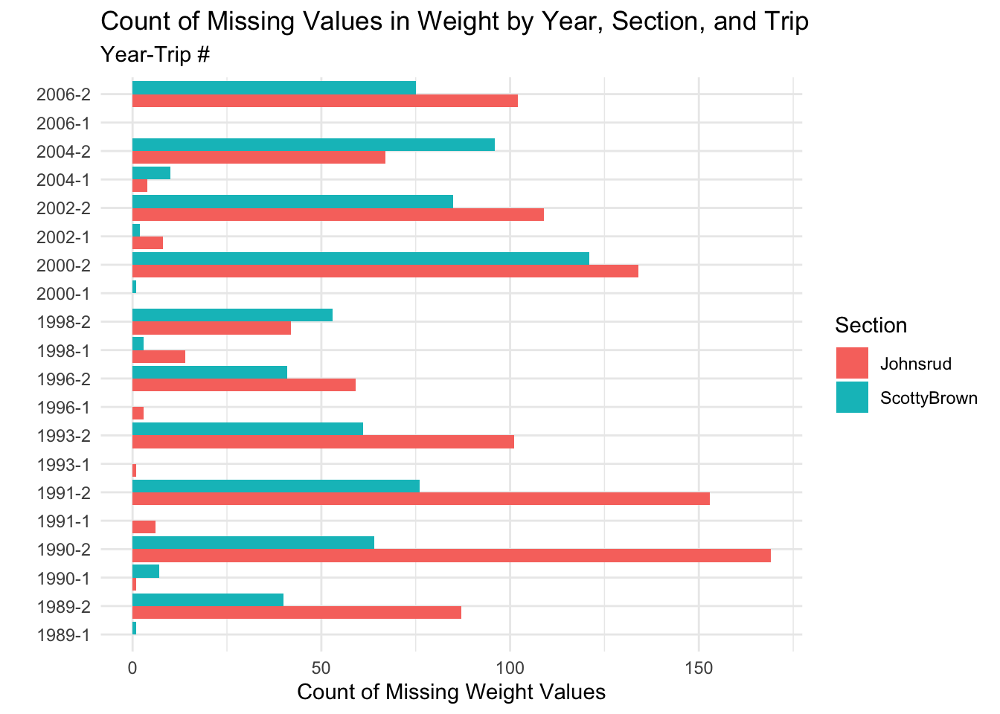
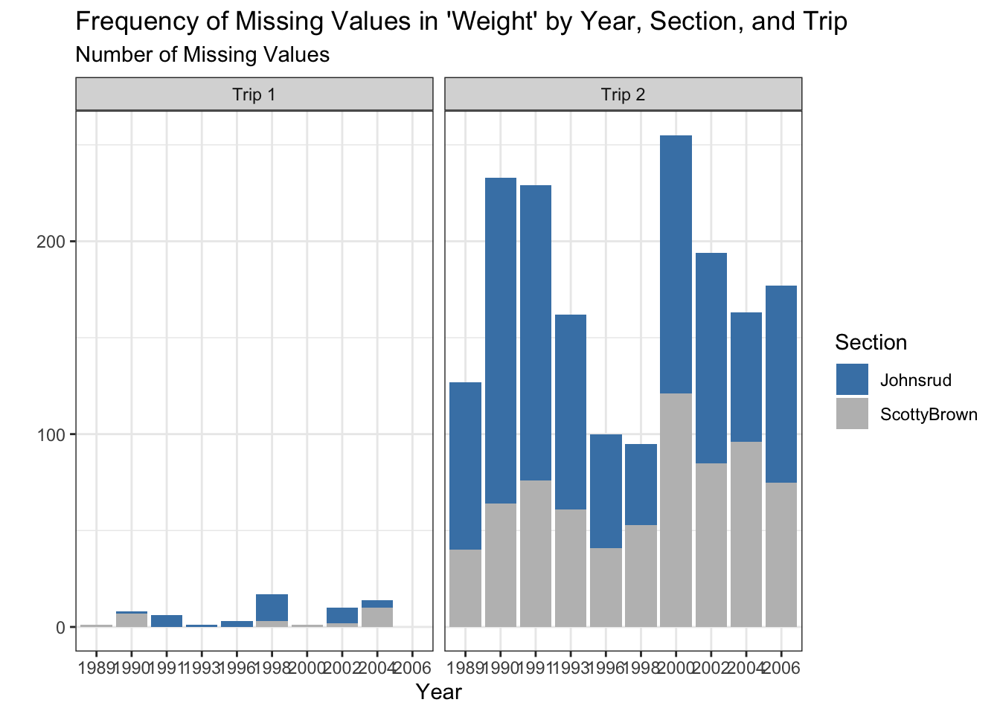
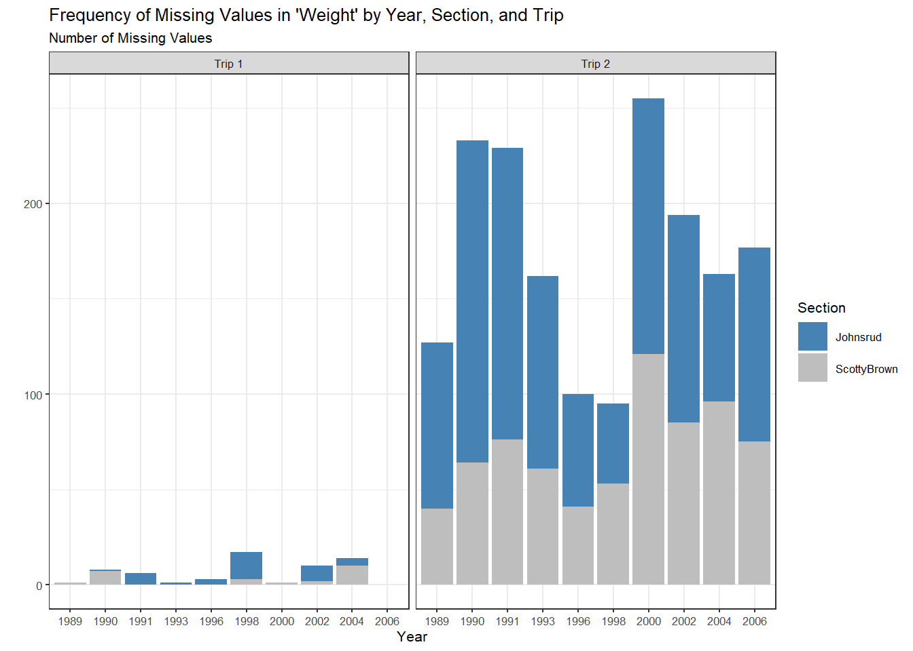
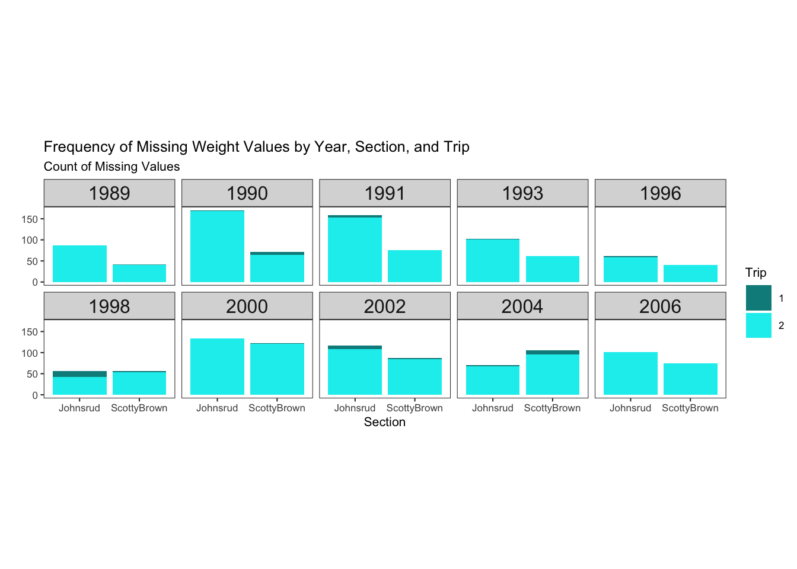
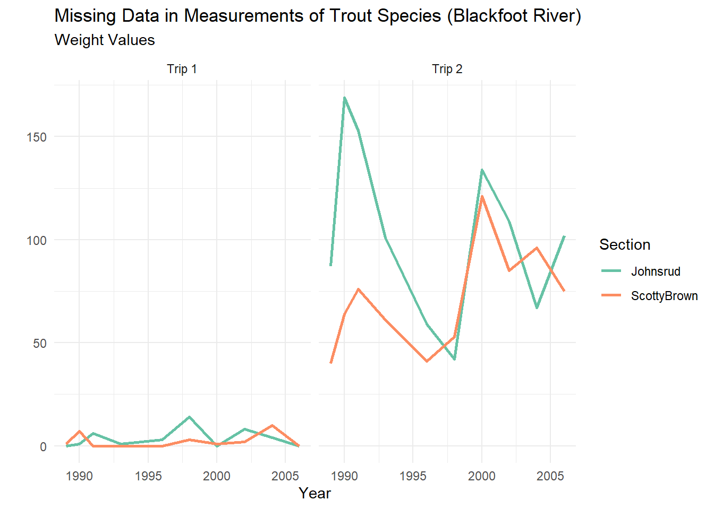
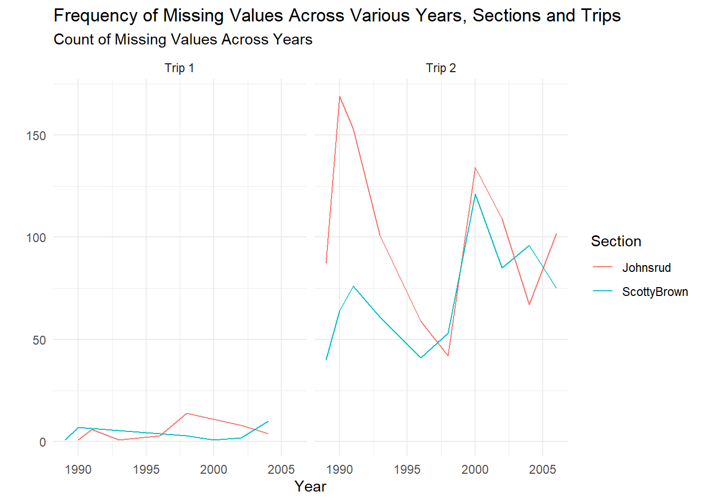

This code is brought to us by Zack Kramer! I think this code is so special because Zack managed to specify every annotation within one call to the annotate() function—very efficient!
ggplot(data = survey_data,mapping =aes(x = weight, y = species)) +geom_boxplot(aes(color = genus),outliers =FALSE) +scale_colour_brewer(palette ="Set1") +annotate("text", y =1:14, x =250, label =c("Neomota","Chaetodipus","Peromyscus","Perognathus","Reithrodontomys","Sigmodon","Onychomys","Peromyscus","Reithrodontomys","Dipodomys","Dipodomys","Chaetodipus","Dipodomys","Onychromys")) +theme(legend.position ="none") +labs(title ="Rodent Weight Distribution by Species",x ="Weight (g)",y ="")

Lab 3
This code is brought to us by a student who wishes to remain anonymous. What I appreciated about their code is both their efficiency and their concise output!
3. Provide a brief overview (~4 sentences) of the dataset.
This data set contains the metrics generated from students’ teacher evaluations at a University in Poland during the winter semester of the 2020-2021 academic year. The data set is 8015 by 22, representing 8015 observations with 22 variables. Each row of data corresponds to a specific teacher, their class identifier and an evaluation question. And for each of these, the average score of the question, the teacher’s information, and additional student metrics are observed.
6. How many unique instructors and unique courses are present in the cleaned dataset?
4. Let’s consider the median household income of each region, and how that income has changed over time. Create a table with ten rows, one for each region, and two columns, one for 2008 and one for 2018. The cells should contain the median of the median household income (expressed in 2018 dollars) of the region and the study_year. Arrange the rows by 2018 values.
This code is brought to us by Oliver Lane & Cassandra Miller! What I appreciate about their code is how their tables have descriptive titles!
# A tibble: 10 × 3
region median_income_2008 median_income_2018
<fct> <dbl> <dbl>
1 San Francisco Bay Area 90412. 104552
2 Orange County 86452. 85398
3 Central Coast 72979 74849
4 Los Angeles County 63471. 64251
5 Inland Empire 65977. 62056
6 San Diego - Imperial 58201. 60344.
7 Northern San Joaquin Valley 59108. 57769
8 Superior California 57831. 53270
9 Southern San Joaquin Valley 52676. 52479
10 North Coast 47862. 45528
5. Which California region had the lowest median full-time median weekly price for center-based childcare for infants in 2018? Does this region correspond to the region with the lowest median income in 2018 that you found in Q4?
This code is brought to us by Eva Moylan & Tillman Erb! What I appreciate about their code is how they went above and beyond by including both the median price of center-based childcare for infants and median household income for each region.
Eva’s Code:
ca_childcare |>group_by(region, study_year) |>summarize(mhi_2018 =median(mhi_2018), #values now are median for each year at each countymc_infant =median(mc_infant),.groups ='drop') |>filter(study_year ==2018) |>pivot_wider(id_cols ="region", #region stays from original table orientation names_from = study_year,values_from =c(mhi_2018, mc_infant)) |>slice_min(mc_infant_2018) #Superior CA has the lowest med childcare for infants in 2018
# A tibble: 1 × 3
region mhi_2018_2018 mc_infant_2018
<fct> <dbl> <dbl>
1 Superior California 53270 215.
# A tibble: 10 × 3
region median_weekly_cc_price median_household_income
<fct> <dbl> <dbl>
1 Superior California 215. 53270
2 North Coast 226. 45528
3 Northern San Joaquin Valley 238. 57769
4 San Diego - Imperial 262. 60344.
5 Southern San Joaquin Valley 287. 52479
6 Inland Empire 294. 62056
7 Central Coast 318. 74849
8 Los Angeles County 334. 64251
9 Orange County 341. 85398
10 San Francisco Bay Area 402. 104552
6. The following plot shows, for all ten regions, the change over time of the full-time median price for center-based childcare for infants, toddlers, and preschoolers. Recreate the plot. You do not have to replicate the exact colors or theme, but your plot should have the same content, including the order of the facets and legend, reader-friendly labels, axes breaks, and a loess smoother.
This code is brought to us by Isabel Villafuerte! What I appreciate about their code is the reordering of the facets and legend, adding dollar signs to the y-axis labels, and dodging the x-axis labels (a clever way to not need to remove some labels!).
7. Create a scatterplot showing the relationship between median household income (expressed in 2018 dollars) and the full-time median weekly price charged for center-based childcare for an infant in California. Overlay a linear regression line (lm) to show the trend.
This code is brought to us by Oliver Lane & Cassandra Miller! What I appreciate about their plot is their use of color, themes, and thoughtful plot titles!
ggplot(ca_childcare, aes(x = mhi_2018, y = mc_infant)) +geom_point(alpha =0.6, color ="steelblue") +# Scatterplot pointsgeom_smooth(method ="lm", se =TRUE, color ="darkred", linetype ="dashed") +theme_bw() +labs(title ="Household Income vs. Infant Care Prices",x ="Median Household Income (dollars)",y ="",subtitle ="Median Weekly Price for Infant Care (dollars)" ) +theme(plot.title =element_text(hjust =0.5, face ="bold") )

Lab 7
2. Create ONE thoughtful visualization that explores the frequency of missing values across the different years, sections, and trips.
This code is brought to us by Tillman Erb! I appreciate Tillman’s use of non-standard colors and facet titles that are clear to the reader.
fish |>filter(if_any(.cols =everything(), .fns = is.na)) |>mutate(trip =as.character(trip),trip =fct_recode(trip,"Trip 1"="1","Trip 2"="2")) |>ggplot(mapping =aes(x = year, fill = section)) +facet_grid(~ trip) +geom_bar() +scale_fill_viridis_d() +labs(x ="Year",y =NULL,title ="Missing observation frequency by section, trip and year",subtitle ="Number of missing observations",color ="Section")

This code is brought to us by Christopher Hawkins! I really like how Christopher thought outside the box and combined the year and the trip number to a single variable on the y-axis (with a descriptive plot title!).
fish |>group_by(year, section, trip) |>summarize(missing_weight =sum(is.na(weight)), .groups ="drop") |># Create a combined label for year and tripmutate(year_trip =paste(year, trip, sep ="-")) |># Plotting the dataggplot(mapping =aes(x = missing_weight, y = year_trip, fill = section)) +geom_bar(stat ="identity", position ="dodge") +labs(title ="Count of Missing Values in Weight by Year, Section, and Trip",subtitle ="Year-Trip #",x ="Count of Missing Weight Values",y ="",fill ="Section" ) +theme_minimal()

This visualization is brought to us by Siwuthara Prak! What I really appreciate about this plot is how it plots every year that there were measurements.
fish |>filter(is.na(weight)) |>mutate(trip =factor(trip, levels =c("1", "2")), trip =fct_recode(trip, `Trip 1`="1",`Trip 2`="2") )|>group_by(year, section, trip) |>summarise(missing_count =n(), .groups ='drop') |>ggplot(aes(x =factor(year), y = missing_count, fill = section)) +geom_bar(stat ="identity", position ="stack") +facet_wrap(~ trip, ncol =2) +theme_bw(base_size =8) +labs(x ="Year",y ="",subtitle ="Number of Missing Values",fill ="Section",title ="Frequency of Missing Values in 'Weight' by Year, Section, and Trip" ) +scale_fill_manual(values =c("Johnsrud"="steelblue", "ScottyBrown"="gray")) # Adjusted color for ScottyBrown

This code is brought to us by Alex Lung! I love the idea of faceting by year, since it gets at the same idea as Siwuthara’s plot, where the reader can see every year there are data values for. Alex also uses some fun (non-standard) colors!
fish |>#Make sure it is rows lacking wight datafilter(is.na(weight)) |>#Alter into a usable distincter variablemutate(trip =as.factor(trip)) |>group_by(year, section, trip) |>summarise(Missing_Count =n(), .groups ="drop") |>ggplot(aes(x = section, y = Missing_Count, fill = trip)) +geom_bar(stat ="identity") +facet_wrap(~ year, ncol =5) +labs(title ="Frequency of Missing Weight Values by Year, Section, and Trip",subtitle ="Count of Missing Values",x ="Section",y ="",fill ="Trip" ) +theme_bw(base_size =8) +theme(strip.text =element_text(size =12),aspect.ratio =0.6,panel.grid.major =element_blank(), panel.grid.minor =element_blank() ) +scale_fill_manual(values =c("darkcyan", "cyan2"))

This code is brought to us by a student who wishes to remain anonymous. I think a line plot is a great approach here to see the changes in missing values over time, plus they use some great colors!
fish |>group_by(year, section, trip) |>summarize(missing_count =sum(is.na(weight)), .groups ="drop") |>mutate(trip =case_when( trip ==1~"Trip 1", trip ==2~"Trip 2")) |>ggplot(aes(x = year, y = missing_count, color = section)) +geom_line(size =1) +scale_color_brewer(palette ="Set2") +labs(title ="Missing Data in Measurements of Trout Species (Blackfoot River)",x ="Year",subtitle ="Weight Values",y ="",color ="Section") +facet_wrap(~ trip) +theme_minimal()

This code is brought to us by Cassandra Miller! Cassandra also used a line plot, with great facet labels and a great plot title!
fish |>filter(is.na(weight)) |>group_by(year, section, trip) |>mutate(trip =recode(trip, '1'='Trip 1','2'='Trip 2')) |>summarise(Missing_amount =n(), .groups ='drop') |>ggplot(aes(x = year, y = Missing_amount, color = section)) +geom_line() +facet_wrap(~trip) +theme_minimal() +labs(x ='Year',y ='',title ='Frequency of Missing Values Across Various Years, Sections and Trips',subtitle ='Count of Missing Values Across Years',color ='Section' )

5. Let’s incorporate some input validation into your function. Modify your previous code so that the function stops if …
… the input vector is not numeric.
… the length of the input vector is not greater than 1.
This code is brought to us by Daniel Bush! I thought it was really clever to add an additional check to see if the min and the max values were identical.
This code is brought to us by Tillman! I was very impressed with the addition of a na.rm argument (that’s optional!), to control the output of the final vector.
rescale_01 <-function(vec, na.rm =TRUE) {if (!is.numeric(vec[1])){stop("Error: vector provided is not numeric") } elseif (length(vec) <=1) {stop("Error: vector length must be greater than 1") } vec_range <-range(vec, na.rm =TRUE, finite =TRUE) vec <- (vec - vec_range[1]) / (vec_range[2] - vec_range[1])if (na.rm){ vec <- vec[!is.na(vec)] }return(vec)}